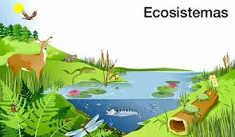
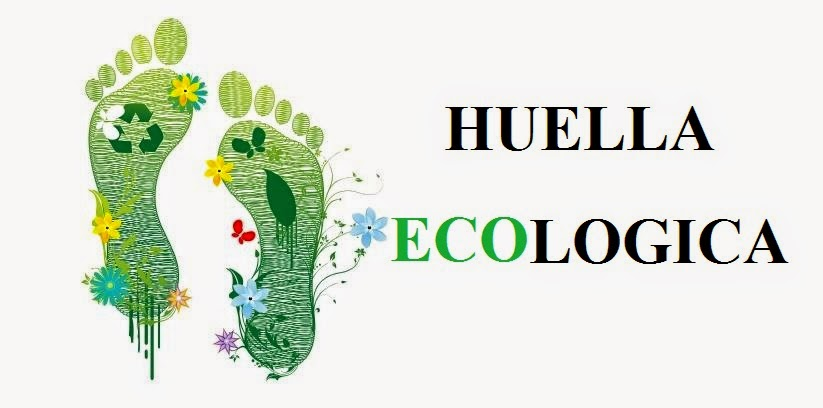

Significado

El ecosistema es el conjunto de especies de un área determinada que interactúan entre ellas y con su ambiente abiótico;
mediante procesos como la depredación, el parasitismo, la competencia y la simbiosis, y con su ambiente al desintegrarse y volver a
ser parte del ciclo de energía y de nutrientes. Las especies del ecosistema, incluyendo bacterias, hongos, plantas y animales dependen
unas de otras. Las relaciones entre las especies y su medio, resultan en el flujo de materia y energía del ecosistema.
El significado del concepto de ecosistema ha evolucionado desde su origen. El término acuñado en los años 1930s, se adscribe a
los botánicos ingleses Roy Clapham (1904-1990) y Sir Arthur Tansley (1871-1955). En un principio se aplicó a unidades de diversas
escalas espaciales, desde un pedazo de tronco degradado, un charco, una región o la biosfera entera del planeta, siempre y cuando en ellas
pudieran existir organismos, ambiente físico e interacciones.
Más recientemente, se le ha dado un énfasis geográfico y se ha hecho análogo a las formaciones o tipos de vegetación; por ejemplo,
matorral, bosque de pinos, pastizal, etc. Esta simplificación ignora el hecho de que los límites de algunos tipos de vegetación son discretos
, mientras que los límites de los ecosistemas no lo son. A las zonas de transición entre ecosistemas se les conoce como “ecotonos”.
Diversidades alfa, beta y gama. Robert Whittaker (1920-1980), ecólogo estadounidense investigador de la sucesión y de gradientes
de vegetación, propuso tres medidas de diversidad de los ecosistemas: α, β, y γ. Alfa ( α ) es la diversidad dentro de un ecosistema que
generalmente se describe como el número de especies. La diversidad beta (β) incluye la comparación de diferentes ecosistemas en gradientes
ambientales, por ejemplo, en una zona montañosa, en una zona costera. La diversidad beta nos indica que tan grande es el cambio de las especies
de un ecosistema a otro. La diversidad gamma (γ) se refiere a la diversidad total de una región, es decir a la diversidad geográfica. En ella se
suman las diversidades alfa de varios ecosistemas.
¿Que es la huella ecologista?
La huella ecológica (del inglés ecological footprint) es un indicador del impacto ambiental generado por la demanda humana que se
hace de los recursos existentes en los ecosistemas del planeta, relacionándola con la capacidad ecológica de la Tierra de regenerar sus recursos.
Representa el área de tierra o agua ecológicamente productivos (cultivos, pastos, bosques o ecosistemas acuáticos) e idealmente también el
volumen de aire, necesarios para generar recursos y además para asimilar los residuos producidos por cada población determinada de acuerdo a su
modo de vida, de forma indefinida. Estas medidas se pueden efectuar realizándose a diferentes escalas: individuo (la huella ecológica de una persona)
, poblaciones (la huella ecológica de una ciudad, de una región, de un país...), comunidades (la huella ecológica de las sociedades agrícolas, de las
sociedades industrializadas, etc).
El objetivo fundamental de calcular las huellas ecológicas consiste en evaluar el impacto sobre el planeta de un determinado modo o forma de vida
y compararlo con la biocapacidad del planeta. Se trata, pues, de un indicador clave para la sostenibilidad.
La ventaja de medir la huella ecológica para entender la apropiación humana está en aprovechar la habilidad para hacer comparaciones. Es posible
comparar, por ejemplo, las emisiones producidas al transportar un bien en particular con la energía requerida para el producto sobre la misma
escala (hectáreas).

El análisis de la Huella ecológica ha sido aplicado a varios niveles, desde la escala global,3 hasta el nivel hogareño.4 En este estudio, el
componente huella ecológica de Guernsey ha sido calculado y luego usado como una herramienta para explorar la toma de decisiones. Esto ha sido hecho
considerando la huella ecológica de pasajeros de viaje, observando datos sobre series de tiempo y el desarrollo de escenarios.
La aproximación componente base, primero documentada por Simmons y Chambers (1998) y luego por Simmons et al., (2000) es un acercamiento
diferente a la huella ecológica. En lugar de considerar el consumo de materias primas, este considera el efecto de transporte, energía, agua y desecho.
Esta resultó una estructura más simplificada y educativa con mayor significado a nivel regional. Esto es principalmente porque está construido en torno
a actividades que las personas pueden razonar y en las cuales ellas participan (tal como la producción de desechos y consumo de electricidad). Simmons
y Chambers (1998) calcularon la primera serie de algoritmos capaces de convertir “Uso de Recursos” a “Área de Tierra Equivalente”, titulado “Metodología
Eco–pionero. En el modelo Componente Base, el valor de la huella ecológica para ciertas actividades son precalculadas usando datos de la región estudiada
(Simmons et al.,2000). Con el acercamiento Wackernagel’s, conocido como la Huella Ecológica Compuesta, seis principales tipos de tierra de espacio
productivo son usados: tierra de energía fósil, tierra arable, pastura, forestal, tierra construible y espacio de mar. El acercamiento Compuesto considera
la demanda humana sobre cada uno de esos tipos de tierra, para una población dada, donde quiera que esta tierra pueda estar.
 5598529472
5598529472